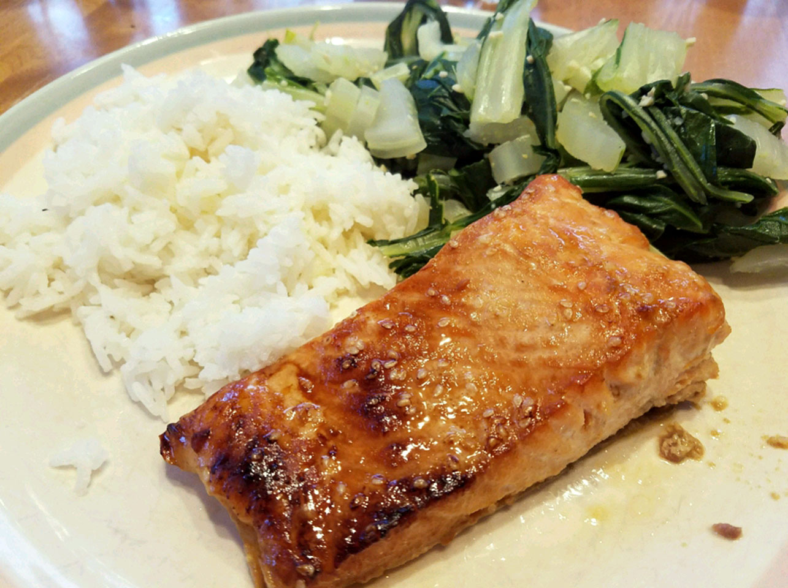

back
Teriyaki Salmon

Description
Preparation time of 10 min. Cooking time of 15 min. Additional time of 1 hr. Total time of 1 hr and 25 min. Yields 4 servings.
Ingredients
- ¼ cup sesame oil
- ¼ cup lemon juice
- ¼ cup soy sauce
- 2 tablespoons brown sugar, or more to taste
- 1 tablespoon sesame seeds
- 1 teaspoons ground mustard
- 1 teaspoons ground ginger
- ¼ teaspoon garlic powder
- 4 (6 ounce) salmon steaks
Steps
- Mix sesame oil, lemon juice, soy sauce, brown sugar, sesame seeds, ground mustard, ginger, and garlic powder in a small saucepan over low heat. Bring to a simmer, stirring until sugar has dissolved. Set aside 1/2 cup of marinade for basting.
- Pour remaining marinade into a resealable plastic bag and place salmon into the marinade. Squeeze air out of the bag, seal, and marinate the salmon steaks for at least 1 hour (2 hours for better flavor). Drain and discard used marinade.
- Set oven rack about 4 inches from the heat source and preheat the oven's broiler. Place salmon steaks into a broiler pan and broil for 5 minutes. Brush steaks with reserved marinade, turn, and broil until fish is opaque and flakes easily, about 5 more minutes. Brush again with marinade.